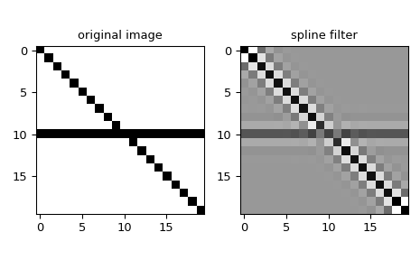

scipy.ndimage.spline_filter¶
-
scipy.ndimage.spline_filter(input, order=3, output=<class 'numpy.float64'>, mode='mirror')[source]¶ Multidimensional spline filter.
For more details, see
spline_filter1d.See also
spline_filter1dCalculate a 1-D spline filter along the given axis.
Notes
The multidimensional filter is implemented as a sequence of 1-D spline filters. The intermediate arrays are stored in the same data type as the output. Therefore, for output types with a limited precision, the results may be imprecise because intermediate results may be stored with insufficient precision.
For complex-valued input, this function processes the real and imaginary components independently.
New in version 1.6.0: Complex-valued support added.
Examples
We can filter an image using multidimentional splines:
>>> from scipy.ndimage import spline_filter >>> import matplotlib.pyplot as plt >>> orig_img = np.eye(20) # create an image >>> orig_img[10, :] = 1.0 >>> sp_filter = spline_filter(orig_img, order=3) >>> f, ax = plt.subplots(1, 2, sharex=True) >>> for ind, data in enumerate([[orig_img, "original image"], ... [sp_filter, "spline filter"]]): ... ax[ind].imshow(data[0], cmap='gray_r') ... ax[ind].set_title(data[1]) >>> plt.tight_layout() >>> plt.show()
